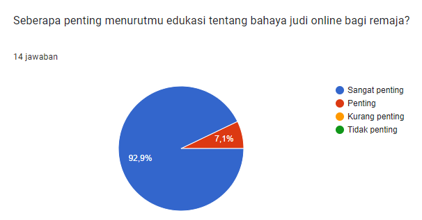
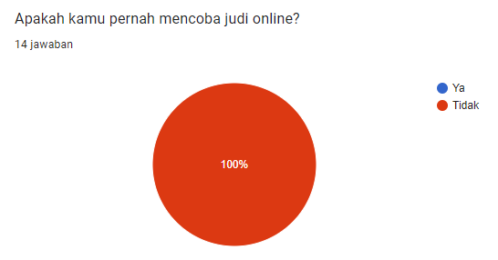

Penyebab
Penyebab meningkatnya perjudian online di kalangan remaja dipengaruhi oleh berbagai faktor. Salah satunya adalah kemudahan akses internet, yang memungkinkan remaja mengakses situs judi kapan saja menggunakan perangkat seperti ponsel atau komputer.
Selain itu, tekanan sosial dari teman sering membuat remaja merasa terpaksa ikut berjudi untuk dianggap "keren" atau tidak ketinggalan zaman. Janji keuntungan cepat yang ditawarkan oleh situs judi juga menarik perhatian remaja yang ingin memperoleh uang dengan mudah.
Selain itu, rasa penasaran menjadi alasan lain, karena remaja ingin mencoba dan mengetahui bagaimana permainan judi online bekerja. Kurangnya pengawasan orang tua juga berperan, karena banyak remaja yang bebas mengakses situs judi tanpa batasan yang jelas.
Faktor anonimitas dalam dunia maya membuat remaja merasa aman dan tidak diketahui saat berjudi. Iklan dan promosi yang menggoda dari situs judi memperburuk situasi ini, menarik remaja untuk bergabung. Terakhir, beberapa remaja juga terlibat dalam judi online sebagai pelarian dari masalah pribadi atau stres. Semua faktor ini berkontribusi pada meningkatnya judi online di kalangan remaja.
Hasil Observasi

Sebagian responden sangat setuju dan menganggap edukasi tentang bahaya judi online sangat penting bagi remaja.
Hasil Observasi

Sebagian besar responden menjawab tidak pernah mencoba judi online, tetapi beberapa responden mengatakan pernah mencoba, meskipun alasan mereka bervariasi.
Dampak
Judi online dapat menimbulkan berbagai dampak negatif, baik bagi individu maupun masyarakat. Dampak finansial menjadi yang paling jelas, di mana banyak orang mengalami kerugian besar dan bahkan terjerat utang.
Selain itu, ketergantungan atau adiksi terhadap judi online seringkali muncul, yang mengarah pada gangguan kesehatan mental seperti stres, kecemasan, dan depresi.
Masalah ini juga dapat merusak hubungan keluarga, karena adanya kebohongan atau pengabaian tanggung jawab. Selain itu, judi online dapat mengancam keamanan data pribadi, serta mengurangi produktivitas kerja.
Secara keseluruhan, dampak negatif judi online dapat merusak kehidupan pribadi, sosial, dan profesional seseorang.
Solusi
Berdasarkan hasil observasi ini, disarankan agar pihak sekolah, orang tua, dan pemerintah lebih aktif dalam memberikan edukasi kepada remaja mengenai dampak negatif judi online, serta memperkenalkan kebijakan yang lebih ketat untuk mencegah akses dan keterlibatan remaja dalam judi online.
Kesimpulan
Judi online membawa dampak negatif yang signifikan bagi individu dan masyarakat, mulai dari kerugian finansial, kecanduan, gangguan kesehatan mental, hingga kerusakan hubungan sosial dan keluarga. Selain itu, judi online juga berpotensi mengancam keamanan data pribadi dan mengurangi produktivitas kerja. Oleh karena itu, penting untuk mengambil langkah pencegahan yang tepat, seperti meningkatkan kesadaran akan risiko perjudian dan memberikan edukasi tentang dampaknya. Solusi lain yang dapat dilakukan adalah pengawasan yang lebih ketat terhadap situs judi online, serta menyediakan dukungan bagi mereka yang mengalami kecanduan melalui layanan rehabilitasi dan konseling. Masyarakat, pemerintah, dan penyedia layanan internet memiliki peran penting dalam mengurangi dampak negatif judi online dan menciptakan lingkungan yang lebih sehat.